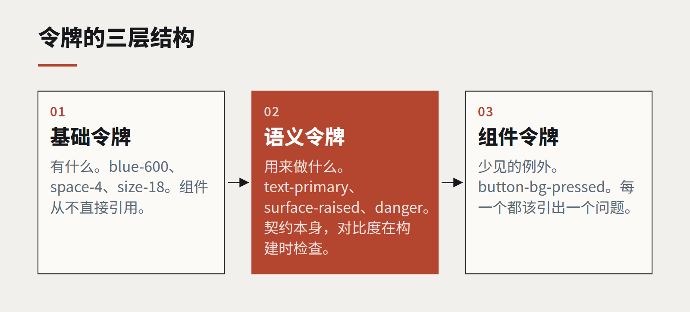

设计令牌是一份契约，不是一块调色板
我们接手的大多数令牌文件，只是一串起了花哨名字的颜色。真正有用的令牌，是设计和工程之间关于“什么可以改、什么绝不能变”的约定。

设计令牌（design tokens）出现时带着一个承诺：颜色、间距、字体只定义一次，所有产品、平台和团队就能保持一致。实际上，我们在客户项目里接手的令牌文件通常是两种之一：要么是一张平铺的列表，收录了所有人用过的所有颜色，名字叫 blue-500-alt 之类；要么是一套极度抽象的层级，没人说得清表格边框该用哪一个。
这两种都不是契约，而令牌存在的意义，恰恰是做一份契约。
三层结构，三种承诺
能在真实组织里存活下来的令牌体系，通常分三层，每一层承诺的东西不同。
- 基础令牌描述“有什么”：品牌的十二种蓝、间距刻度、字号。它们不对用法做任何承诺，工程师几乎不应该直接引用。
- 语义令牌描述“用来做什么”：
text-primary、surface-raised、border-subtle、danger。承诺就在这里。一个用了text-primary的组件，保证在surface-default上可读，亮色和暗色主题都成立，今天成立，下次品牌升级之后也成立。 - 组件令牌描述例外：某个按钮确实需要一个语义集合里没有的颜色。它们应该很少见，而且每一个都该让人有点不好意思，并引出一个问题。
契约住在中间这一层。设计师可以改变某个语义令牌指向哪个基础令牌——品牌升级本质上就是这件事。工程师可以依赖语义名称永远不会消失、永远不会违背它的保证。

把保证写下来
语义令牌只有在它的保证被写进机器能检查的地方时，才算契约。对颜色来说，就是对比度：每个文字令牌与它允许出现的每个背景配对，每一对都有最低对比度。对间距来说，就是刻度封闭——组件里不允许随意取值。对字体来说，就是每种角色的字号、字重和行高绑在一起走。
我们把这些规则放进构建流程。一个把 text-muted 放在 surface-sunken 上、对比度低于 4.5:1 的合并请求，会像单元测试失败一样被拦下。在我们的项目里，这一条检查挡住的无障碍倒退，比任何一次人工审查都多。
按意图命名，不按外观命名
破坏令牌体系最快的办法，就是按外观给令牌起名。grey-light-border 在品牌换成暖色中性色之前都没问题，换了之后，每一处用法都成了谎言。border-subtle 则能熬过任何一套调色板。
一个好用的测试：把整套基础调色板换成另一个品牌的，每个语义名称是否依然说得通？如果是，这些名字就尽到了职责。
比你想的起点更小
我们交付过最成功的令牌集，最初的语义令牌不到四十个。这足以覆盖文字、背景、边框、一个主操作和四种状态色，并且支持两套主题。其余的，等真实组件需要时再加——而“它是否真的需要”这场讨论，正是这套体系存在的目的。
令牌不是一份交付物，而是一份由双方共同维护的约定。有了它，设计语言可以改变，而不需要逐屏人工检查。